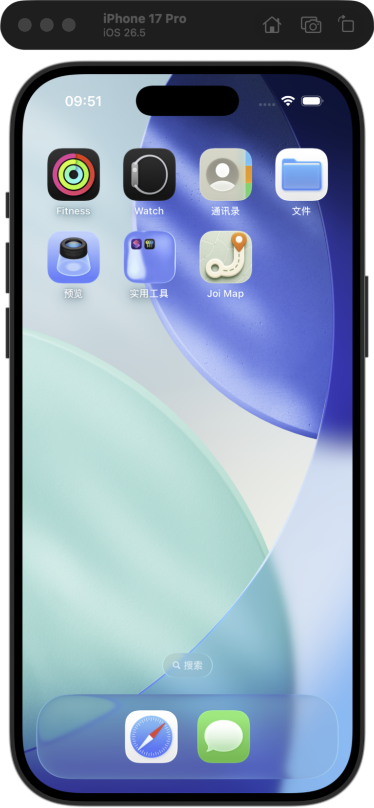
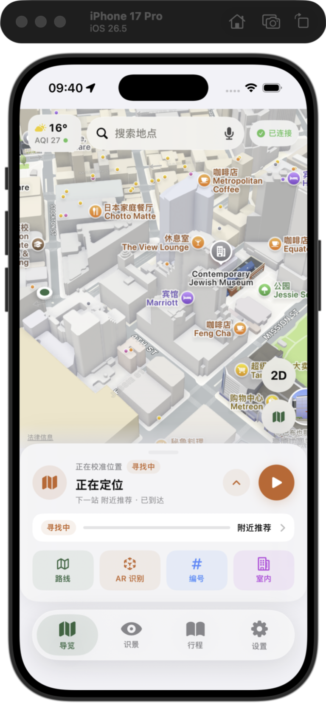
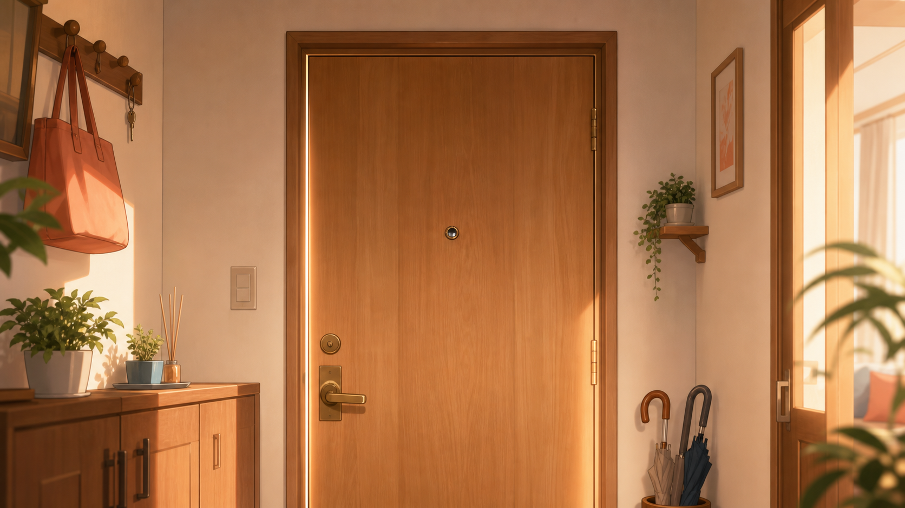
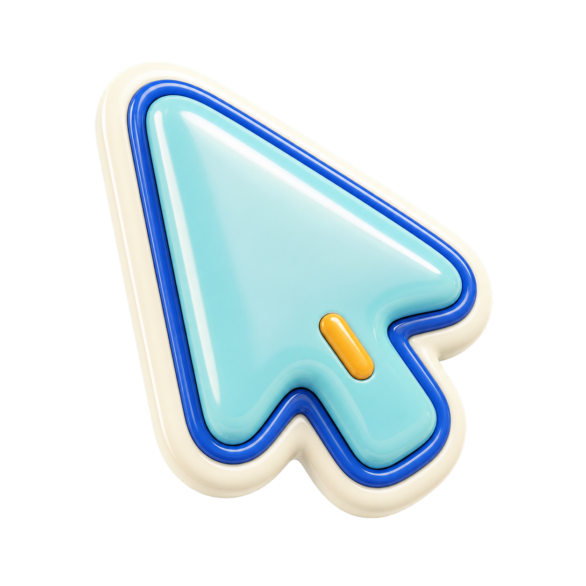
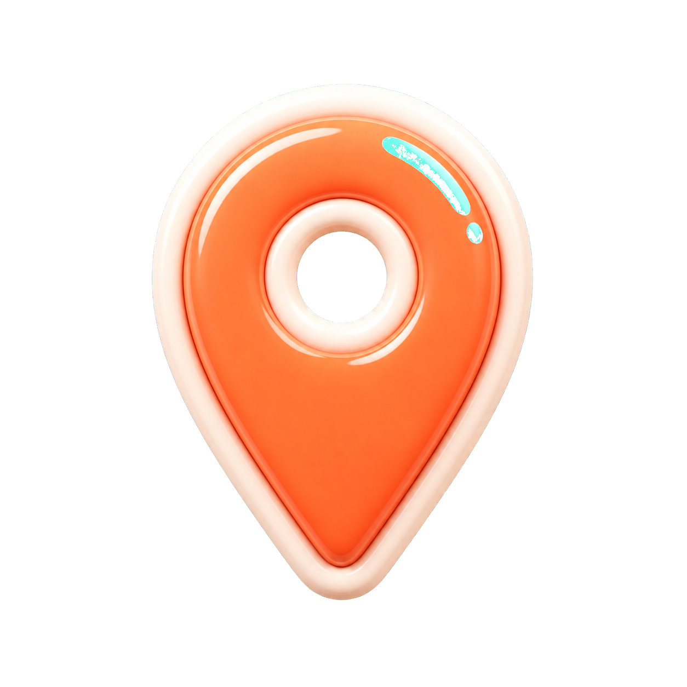
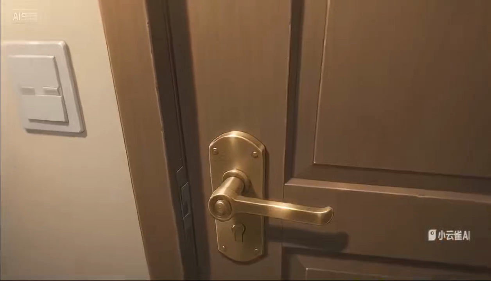
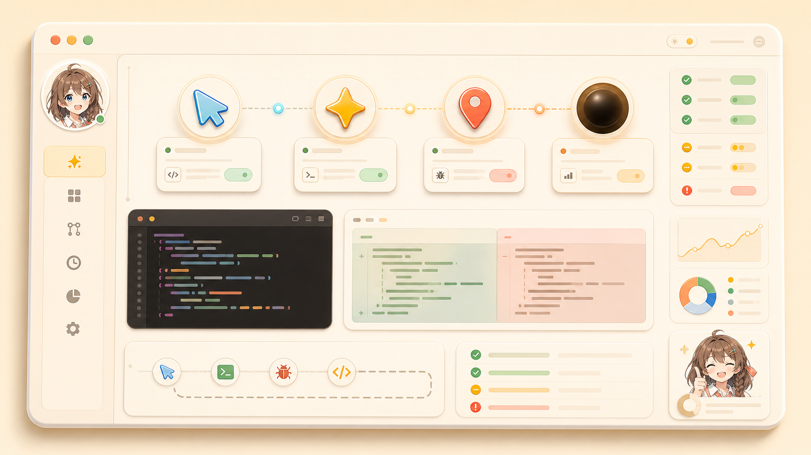
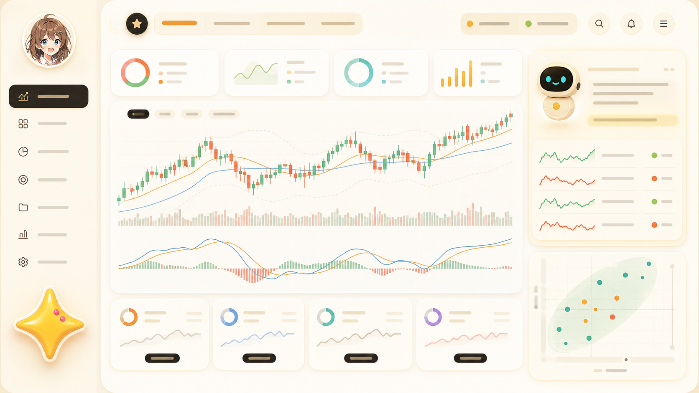

Private Core
Private Core
Windows-first multimodal agent companion with planner, policy gate, memory, tool registry, screen watching, Codex adapter, and character-fronted desktop shell.






I am shaping All Joi into a family of local tools, embodied interfaces, field companions, and story worlds that feel like one continuous partner.
All Joi Studio
I build companion systems that can watch, guide, code, narrate, and eventually step from screen into world.
All Joi is not one app. It is a connected practice across desktop agent, map guide, autopilot control, finance tooling, and interactive fiction.
Private Core
Windows-first multimodal agent companion with planner, policy gate, memory, tool registry, screen watching, Codex adapter, and character-fronted desktop shell.
 Private MVP
Private MVP
现场感知型 AI 讲解员：MapKit 定位、拍照识别、可追问讲解、行程推荐、多语言和语音路径。

DoorwayThe cinematic personal-site entrance: iPhone Joi Map, knock, peephole, generated video, and pixel-handle interaction.

Developer-facing control center for local design-to-develop-to-test-to-review loops in isolated worktrees.

AI 辅助量化交易工具，覆盖 A 股/港股行情、技术指标、LLM 分析、策略中心和回测系统。
Steins;Gate-like 双语视觉小说，古代中国异闻、飞符改写、天命与时间回信的故事实验。
The site now reads like a control surface for everything in progress: Joi as desktop companion, Joi Map as world-facing guide, Autopilot as build loop, and story systems as the emotional layer.